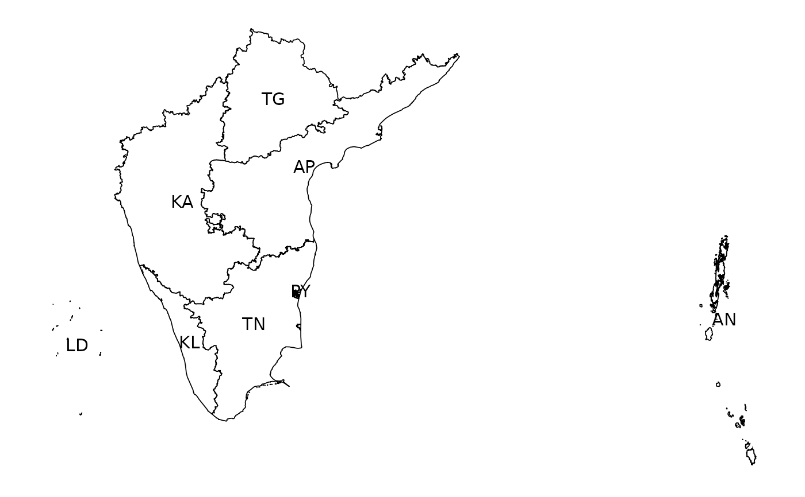

Southern Zonal Council comprises of Andhra Pradesh, Karnataka, Kerala, Puducherry, Tamil Nadu, and Telangana. Andaman and Nicobar and Lakshadweep are special invitees of the Southern Zonal Council.
Examples
plot_map(include = .southsp, labels = TRUE)
#> Warning: st_point_on_surface may not give correct results for longitude/latitude data
